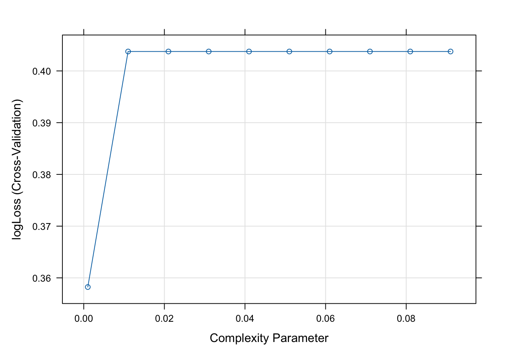

Modeling Notebook for Diabetes Health Indicators Dataset
1. Introduction
1.1 Dataset
Diabetes _ binary _ health _ indicators Dataset is a clean dataset of 253,680 survey responses to the CDC’s BRFSS2015. The target variable Diabetes_binary has 2 classes. 0 is for no diabetes, and 1 is for prediabetes or diabetes. This dataset has 21 feature variables which have been reported can influencing diabetes disease and other chronic health conditions based on diabetes disease research.
Among all variables, I tried to select features, which I thought could be important risk factors for diabetes and other chronic illnesses.
1.2 Modeling
The ultimate goal of modeling is to develop a predictive models that accurately captures the relationship between input features (response variables) and the target variable (diabetes here) to make reliable predictions on new, unseen data.
As the target variable in this project is a binary classification variable, we will use three type of models:
Logistic Regression Logistic regression is a linear model used for binary classification. It predicts the probability that an observation belongs to a particular class.
Classification Trees Classification trees split the data into subsets based on the value of input features, creating a tree-like model of decisions.
Random Forest Random Forest is an ensemble method that combines multiple decision trees, each trained on a random subset of the data and features.
1.3 LossLog metric
In this study, the logLoss will be used as metric to select the best models. LogLoss, also known as logistic loss or cross-entropy loss, is a performance metric for evaluating the predictions of classification models, particularly in binary classification tasks. It measures the accuracy of the probabilistic predictions by comparing the predicted probabilities to the actual class labels. Mathematically, log loss is defined as the negative average of the log of the predicted probabilities assigned to the true classes. Unlike accuracy, which only considers whether the predicted class matches the actual class, log loss takes into account the confidence of the predictions. This is particularly important when dealing with imbalanced datasets or when the cost of misclassification varies. By penalizing incorrect predictions more heavily when the model is confident about them, log loss provides a more nuanced and informative evaluation of model performance. This helps in understanding not just whether the model is correct, but how confident it is in its predictions, leading to better model calibration and more reliable decision-making.
2. Spliting data
In this part, I will split the data into training and test sets at 70/30.
library(tidyverse)
── Attaching core tidyverse packages ──────────────────────── tidyverse 2.0.0 ──
✔ dplyr 1.1.4 ✔ readr 2.1.5
✔ forcats 1.0.0 ✔ stringr 1.5.1
✔ ggplot2 3.5.1 ✔ tibble 3.2.1
✔ lubridate 1.9.3 ✔ tidyr 1.3.1
✔ purrr 1.0.2
── Conflicts ────────────────────────────────────────── tidyverse_conflicts() ──
✖ dplyr::filter() masks stats::filter()
✖ dplyr::lag() masks stats::lag()
ℹ Use the conflicted package (<http://conflicted.r-lib.org/>) to force all conflicts to become errors
library(tidyr)library(caret)
Loading required package: lattice
Attaching package: 'caret'
The following object is masked from 'package:purrr':
lift
library(rpart)library(gbm)
Loaded gbm 2.2.2
This version of gbm is no longer under development. Consider transitioning to gbm3, https://github.com/gbm-developers/gbm3
library(Metrics)
Attaching package: 'Metrics'
The following objects are masked from 'package:caret':
precision, recall
library(randomForest)
randomForest 4.7-1.1
Type rfNews() to see new features/changes/bug fixes.
Attaching package: 'randomForest'
The following object is masked from 'package:dplyr':
combine
The following object is masked from 'package:ggplot2':
margin
Logistic regression is a statistical model used for binary classification tasks, where the outcome variable is categorical and typically binary (e.g., yes/no, success/failure, 0/1). Unlike linear regression, which predicts a continuous output, logistic regression predicts the probability that a given input belongs to a particular class.
Logistic regression is particularly well-suited for binary classification problems, making it an excellent choice for many practical applications where the goal is to predict a categorical outcome. Here are some specific reasons why logistic regression might be applied to such data:
Binary Outcomes: If the target variable is binary (e.g., diabetes or not), logistic regression is directly applicable.
Interpretability: The model’s coefficients provide a clear understanding of how each input feature affects the probability of the outcome.
Baseline Model: Logistic regression serves as a strong baseline model for binary classification tasks. It is often used as a starting point before exploring more complex models.
Efficiency: Logistic regression is computationally efficient and scales well with large datasets, making it practical for real-world applications.
Feature Selection: The simplicity of logistic regression allows for straightforward feature selection and engineering, helping to identify the most important predictors.
# Define a custom summary function for log-losslogLossSummary <-function(data, lev =NULL, model =NULL) {if (!is.null(lev)) {levels(data$pred) <- lev } obs <-as.numeric(data$obs) -1 pred <- data[, levels(data$obs)[2]] log_loss_value <-logLoss(obs, pred)c(logLoss = log_loss_value)}# Set up cross-validationcontrol <-trainControl(method ="cv", number =5, summaryFunction = logLossSummary, classProbs =TRUE,savePredictions =TRUE)#train modelsset.seed(1011)lr_model1 <-train(Diabetes_binary ~., data = training, method ="glm",trControl= control,family = binomial,metric ="logLoss")set.seed(1011)lr_model2 <-train(Diabetes_binary ~ HighBP + HighChol + Smoker + BMI + Sex + Age, data = training, method ="glm",trControl= control,family = binomial,metric ="logLoss")set.seed(1011)lr_model3 <-train(Diabetes_binary ~ HighBP + HighChol + Smoker + BMI + Sex + Age + Sex*Age, data = training, method ="glm",trControl= control,family = binomial,metric ="logLoss")summary(lr_model1)
Call:
summary.resamples(object = lr_results)
Models: Model1, Model2, Model3
Number of resamples: 5
logLoss
Min. 1st Qu. Median Mean 3rd Qu. Max. NA's
Model1 0.3323953 0.3335058 0.3344196 0.3341737 0.3348244 0.3357233 0
Model2 0.3400059 0.3402233 0.3407485 0.3407626 0.3408177 0.3420174 0
Model3 0.3395890 0.3400741 0.3406467 0.3405209 0.3406511 0.3416434 0
Based on cross validation and logLoss evaluation, the model1 showed lower logLoss score, which indicates better performance. So, the lr_model1 was selected as best logistic regression model.
lr_best_model <- lr_model1
4. Classification Tree Model
In this part, I will fit a classification tree model, which is a type of decision tree used for classification tasks, where the goal is to predict a categorical target variable. It is a non-parametric supervised learning method that splits the data into subsets based on the value of input features.
There are several advantages if we choose the classification tree models: - Interpretability: Classification trees are easy to understand and interpret. They provide a clear visualization of the decision-making process, which is helpful for explaining the model’s decisions to non-technical stakeholders. - Non-Parametric: They do not assume any underlying distribution of the data, making them flexible and capable of handling a wide range of data types and distributions. - Feature Selection: During the splitting process, less important features are effectively ignored, providing an inherent form of feature selection. - Handling Non-Linearity: Trees can capture non-linear relationships between features and the target variable. - Handling Missing Values: Classification trees can handle missing values in both the training and testing data.
#train modelset.seed(1001)ct_model <-train(Diabetes_binary ~ ., data = training, method ="rpart",trControl= control,tuneGrid =expand.grid(cp =seq(0.001, 0.1, by =0.01)),metric ="logLoss")print(ct_model)
CART
177577 samples
9 predictor
2 classes: 'no_diabetes', 'prediabetes'
No pre-processing
Resampling: Cross-Validated (5 fold)
Summary of sample sizes: 142061, 142062, 142062, 142061, 142062
Resampling results across tuning parameters:
cp logLoss
0.001 0.3582282
0.011 0.4037576
0.021 0.4037576
0.031 0.4037576
0.041 0.4037576
0.051 0.4037576
0.061 0.4037576
0.071 0.4037576
0.081 0.4037576
0.091 0.4037576
logLoss was used to select the optimal model using the smallest value.
The final value used for the model was cp = 0.001.
plot(ct_model)

5. Random Forest Model
In this part, I will fit a Random Forest Model. A Random Forest is an ensemble learning method primarily used for classification and regression tasks. It consists of a collection of decision trees (hence “forest”) that work together to improve the model’s performance and robustness. The main idea is to combine the predictions of multiple decision trees to obtain a more accurate and stable prediction.
Compared to single basic classification tree model, random forest shows the following advantages: - Better Performance: Random Forests generally outperform single decision trees in terms of accuracy and generalization to new data. - Reduced Overfitting: Single decision trees are prone to overfitting, especially when they are deep and complex. Random Forests mitigate this risk by averaging the predictions of multiple trees. - Handling High Dimensionality: Random Forests can handle a large number of features and are effective in identifying the most important features. - Versatility: Random Forests can be used for both classification and regression tasks and are effective across various domains and types of data.
Random Forest
177577 samples
9 predictor
2 classes: 'no_diabetes', 'prediabetes'
No pre-processing
Resampling: Cross-Validated (5 fold)
Summary of sample sizes: 142061, 142062, 142062, 142061, 142062
Resampling results across tuning parameters:
mtry logLoss
1 Inf
2 Inf
3 Inf
4 Inf
5 Inf
logLoss was used to select the optimal model using the smallest value.
The final value used for the model was mtry = 1.
6. Final Model Selection
Now, I have three best models, lr_best_model, ct_best_model, and rf_best_model. Next, I will predict the test dataset using all the three models, and evaluate the model performance using logLoss as metric.
# predict the testing datalr_test_pred <-predict(lr_best_model, newdata = testing, type ="prob")ct_test_pred <-predict(ct_model, newdata = testing, type ="prob")rf_test_pred <-predict(rf_model, newdata = testing, type ="prob")# calculate the logLoss valueobs_value <-as.numeric(testing$Diabetes_binary)lr_log_loss_value <-logLoss(obs_value, lr_test_pred$prediabetes)ct_log_loss_value <-logLoss(obs_value, ct_test_pred$prediabetes)rf_log_loss_value <-logLoss(obs_value, rf_test_pred$prediabetes)# Compare modelsfinal_results <-list(lr_log_loss_value, ct_log_loss_value, rf_log_loss_value)print(final_results)
The logistic regression model returns the logLoss score 2.64 for testing dataset, classification tree model returns logLoss score 2.43, while the random forest model returns an infinite logLoss score. We can conclude that the classification tree model shows lower lossLog score, which indicates a better prediction performance.